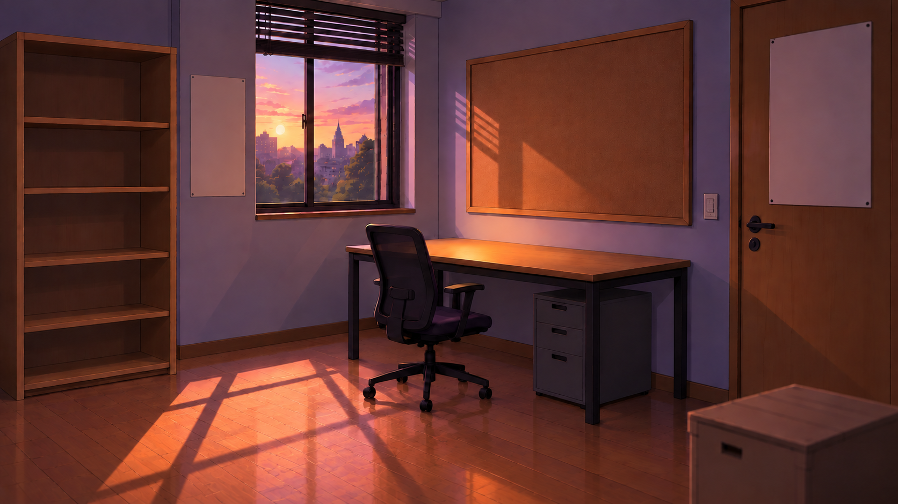
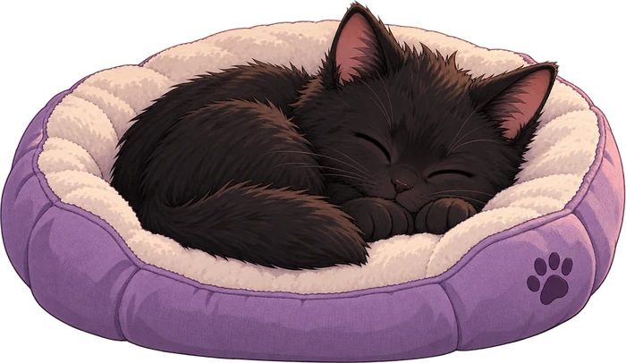
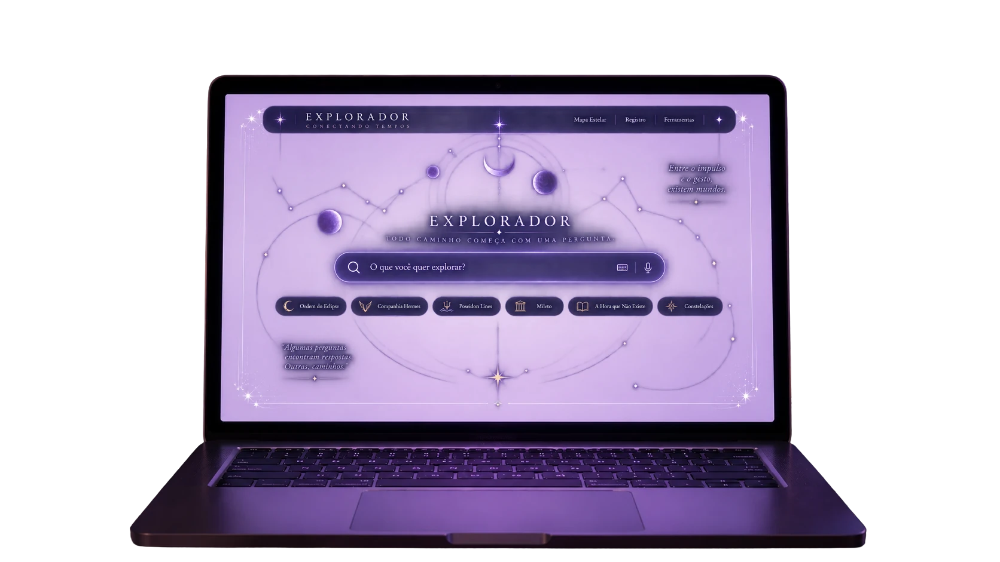

Fiéis da Coruja
Olhe ao redor. Este espaço é seu.
Abrindo sua Sala…
Carregando seu passaporte…


Uma pista pode ser o começo.Escolha uma no Arquivo.
Escolha uma área da sala para se aproximar.
Personalização
Caso atual
Dois dedos para ampliar e arrastar, ou toque duas vezes.

CONEXÃO NÃO ESTABELECIDA
Nenhum caminho foi aberto para este terminal.
Tente novamente quando o tempo permitir.
A SALA NÃO ESTÁ VAZIA
Três caminhos dormem.
Uma história procura seu lugar entre outras histórias.Um pensamento precisa repousar onde ideias são escritas.Uma pequena lembrança só fará sentido onde pistas se encontram.
Não basta encontrar.
Coloque cada coisa onde ela pertence.
A Sala saberá.